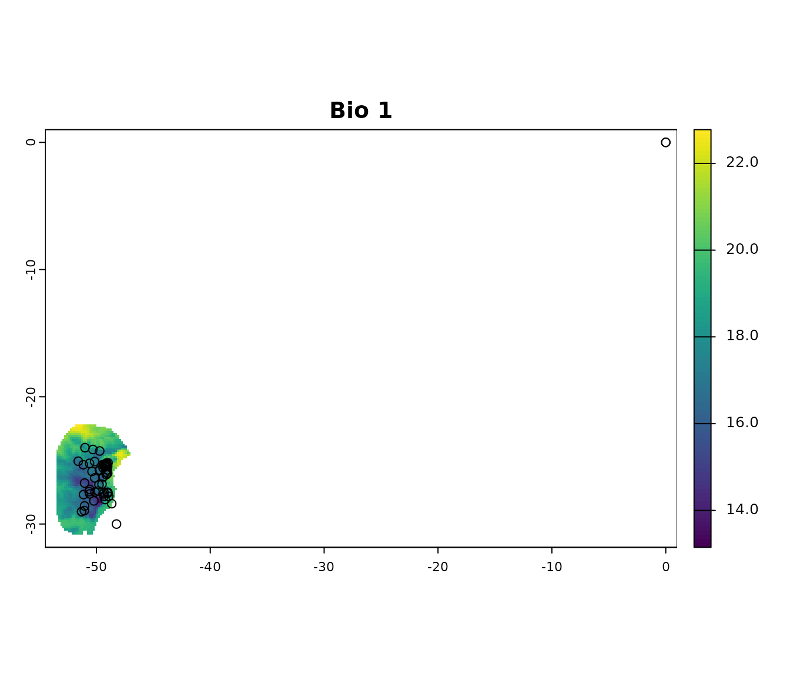

Description
As any modeling technique, ecological niche modeling depends on the
quality of the input data, particularly species occurrence records.
Cleaning these data is a critical step to minimize biases, reduce
errors, and ensure meaningful model outcomes. This vignette introduces
tools available in the kuenm2 package to facilitate the
cleaning of occurrence data prior to modeling. It guides users
through inspecting data, applying cleaning functions, and saving cleaned
datasets, all within a reproducible R workflow.
We want to highlight that additional data cleaning and filtering steps (e.g., spatial thinning) may be necessary depending on the type of model or modeling approach the user intends to adopt. The tools presented here are designed to assist with the most basic steps of cleaning data for modeling.
Getting ready
If kuenm has not been installed yet, please do so. See
the Main guide for installation
instructions.
Load kuenm and any other required packages, and define a
working directory (if needed). In general, setting a working directory
in R is considered good practice, as it provides better control over
where files are read from or saved to. If users are not working within
an R project, we recommend setting a working directory, since at least
one file will be saved at later stages of this guide.
Note: functions from other packages (i.e., not from base R or
kuenm) used in this guide will be displayed as
package::function().
# Load packages
library(kuenm2)
library(terra)
# Current directory
getwd()
# Define new directory
#setwd("YOUR/DIRECTORY") # uncomment and modify if setting a new directory
# Saving original plotting parameters
original_par <- par(no.readonly = TRUE)Cleaning data
Import data
We will use occurrence records provided within the kuenm
package. Most example data sets in the package were derived from Trindade & Marques
(2024). The occ_data_noclean object contains 51 valid
occurrences of Myrcia hatschbachii (a tree endemic to Southern
Brazil) and a group of erroneous records to demonstrate cleaning
steps.
# Import occurrences
data(occ_data_noclean, package = "kuenm2")
# Check data structure
str(occ_data_noclean)
#> 'data.frame': 64 obs. of 3 variables:
#> $ species: chr "Myrcia hatschbachii" "Myrcia hatschbachii" "Myrcia hatschbachii" "Myrcia hatschbachii" ...
#> $ x : num -51.3 -50.6 -49.3 -49.8 -50.2 ...
#> $ y : num -29 -27.6 -27.8 -26.9 -28.2 ...A raster layer included in the package will also be used in this example. This is a bioclimatic variable from WorldClim 2.1 at 10 arc-minute resolution. This layer has been masked using a polygon generated by drawing a minimum convex polygon around the records with a 300 km buffer.
# Import raster layers
var <- terra::rast(system.file("extdata", "Current_variables.tif",
package = "kuenm2"))
# Keep only one layer
var <- var$bio_1
# Check variable
terra::plot(var)
Visualize occurrences records in geography:
# Visualize occurrences on one variable
## Create an extent based on the layer and the records to see all errors
vext <- terra::ext(var) # extent of layer
pext <- apply(occ_data_noclean[, 2:3], 2, range, na.rm = TRUE) # extent of records
allext <- terra::ext(c(min(pext[1, 1], vext[1]), max(pext[2, 1], vext[2]),
min(pext[1, 2], vext[3]), max(pext[2, 2], vext[4]))) + 1
# plotting records on the variable
terra::plot(var, ext = allext, main = "Bio 1")
points(occ_data_noclean[, c("x", "y")])
Basic cleaning steps
The basic data cleaning steps implemented in kuenm help
to: remove missing data, eliminate duplicates, exclude typically (though
not always) erroneous coordinates with 0 longitude and 0 latitude, and
filter out records with low coordinate precision based on the number of
decimal places.
Below is an example of cleaning missing data. This example uses a
data.frame containing only the columns “Species”, “x”, and
“y” (where “x” and “y” represent longitude and latitude, respectively).
If the data.frame includes additional columns and not all
of them should be considered when identifying missing values, users can
specify which columns to use via the columns argument
(default = NULL, which includes all columns). As with any
function, we recommend consulting the documentation for more detailed
explanations (e.g., help(remove_missing)).
# remove missing data
mis <- remove_missing(data = occ_data_noclean, columns = NULL, remove_na = TRUE,
remove_empty = TRUE)
# quick check
nrow(occ_data_noclean)
#> [1] 64
nrow(mis)
#> [1] 60The code below uses the previous results and continues the process of
cleaning data by removing duplicates. The argument columns
can be used as explained before. See full documentation with
help(remove_duplicates).
# remove exact duplicates
mis_dup <- remove_duplicates(data = mis, columns = NULL, keep_all_columns = TRUE)
# quick check
nrow(mis)
#> [1] 60
nrow(mis_dup)
#> [1] 57Continue the process by removing coordinates with values of 0 (zero)
for longitude and latitude (not always needed, as this location is valid
if working with some marine species). See full documentation with
help(remove_corrdinates_00).
# remove records with 0 for x and y coordinates
mis_dup_00 <- remove_corrdinates_00(data = mis_dup, x = "x", y = "y")
# quick check
nrow(mis_dup)
#> [1] 57
nrow(mis_dup_00)
#> [1] 56The following lines of code take the previous result and remove
coordinates with low precision. If the longitude and latitude contain no
or only a few decimal places, they may have been rounded, which can be
problematic in some areas. This a step recommended when users know
coordinate rounding is an issue. This filtering process can also be
applied to longitude and latitude independently. See full documentation
with help(filter_decimal_precision).
# remove coordinates with low decimal precision.
mis_dup_00_dec <- filter_decimal_precision(data = mis_dup_00, x = "x", y = "y",
decimal_precision = 2)
# quick check
nrow(mis_dup_00)
#> [1] 56
nrow(mis_dup_00_dec)
#> [1] 51Users can perform all this steps with a single function
(initial_cleaning()) as follows:
# all basic cleaning steps
clean_init <- initial_cleaning(data = occ_data_noclean, species = "species",
x = "x", y = "y", remove_na = TRUE,
remove_empty = TRUE, remove_duplicates = TRUE,
by_decimal_precision = TRUE,
decimal_precision = 2)
# quick check
nrow(occ_data_noclean) # original data
#> [1] 64
nrow(clean_init) # data after all basic cleaning steps
#> [1] 51
# a final plot to check
par(mfrow = c(2, 2))
## initial data
terra::plot(var, ext = allext, main = "Initial data")
points(occ_data_noclean[, c("x", "y")])
## data after basic cleaning steps
terra::plot(var, ext = allext, main = "After basic cleaning")
points(clean_init[, c("x", "y")])
terra::plot(var, main = "After basic cleaning (zoom)")
points(clean_init[, c("x", "y")])
Other cleaning steps
Two additional cleaning steps are implemented in kuenm,
removing cell duplicates and moving points to valid cells.
Removing cell duplicates involves excluding records that are not
exact coordinate duplicates but are located within the same pixel. The
process randomly selects one record from each cell to retain. See full
documentation with help(remove_cell_duplicates).
# exclude duplicates based on raster cell (pixel)
celldup <- remove_cell_duplicates(data = clean_init, x = "x", y = "y",
raster_layer = var)
# quick check
nrow(clean_init) # data after all basic cleaning steps
#> [1] 51
nrow(celldup) # plus removing cell duplicates
#> [1] 42The following lines of code help adjust records that fall just
outside valid raster cells to prevent data loss. Given the nature and
resolution of raster layers, valid records are sometimes perceived as
being outside the boundaries of cells with data. In such cases, an
alternative is to move these records to the nearest valid cell. A
distance limit is applied to avoid relocating records that are too far
from the study area. See below for an example of how to use this
functionality of kuenm. See full documentation with
help(move_2closest_cell).
# move records to valid pixels
moved <- move_2closest_cell(data = celldup, x = "x", y = "y",
raster_layer = var, move_limit_distance = 10)
#> Moving occurrences to closest pixels...
# quick check
nrow(celldup) # basic cleaning and no cell duplicates
#> [1] 42
nrow(moved[moved$condition != "Not_moved", ]) # plus moved to valid cells
#> [1] 41The function advanced_cleaning() facilitates the two
processes from above in a single step:
# move records to valid pixels
clean_data <- advanced_cleaning(data = clean_init, x = "x", y = "y",
raster_layer = var, cell_duplicates = TRUE,
move_points_inside = TRUE,
move_limit_distance = 10)
#> Moving occurrences to closest pixels...
# exclude points not moved
clean_data <- clean_data[clean_data$condition != "Not_moved", 1:3]
# quick check
nrow(occ_data_noclean) # original data
#> [1] 64
nrow(clean_init) # data after all basic cleaning steps
#> [1] 51
nrow(clean_data) # data after all basic cleaning steps
#> [1] 41
# a final plot to check
par(mfrow = c(3, 2))
## initial data
terra::plot(var, ext = allext, main = "Initial")
points(occ_data_noclean[, c("x", "y")])
## data after basic cleaning steps
terra::plot(var, ext = allext, main = "Basic cleaning")
points(clean_init[, c("x", "y")])
terra::plot(var, main = "Basic cleaning (zoom)")
points(clean_init[, c("x", "y")])
## data after basic cleaning steps
terra::plot(var, main = "Final data")
points(clean_data[, c("x", "y")])
## zoom to a particular area, initial data
terra::plot(var, xlim = c(-48, -50), ylim = c(-26, -25), main = "Initial (zoom +)")
points(occ_data_noclean[, c("x", "y")])
## zoom to a particular area, final data
terra::plot(var, xlim = c(-48, -50), ylim = c(-26, -25), main = "Final (zoom +)")
points(clean_data[, c("x", "y")])
Notes:
- The functions that move records to valid pixels do not erase points that were not moved. Make sure to exclude them as indicated in the previous chunk of code, if that is what is needed.
# Reset plotting parameters
par(original_par) Saving results
The results of the data cleaning steps in kuenm are
simple data.frames that may include a few additional
columns and fewer records than the original dataset. An easy way to save
these results is by writing them to CSV files. Although multiple options
exist for saving this type of data, another useful alternative is to
save it as an RDS file in your directory. See the examples below: